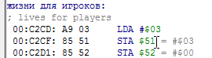
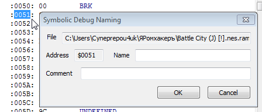

Содержание
Чтобы добавить комментарий на код, надо кликнуть в Debugger'е правой кнопкой по адресу команды. В окне Symbolic Debug Naming нужно ввести имя комментария в поле ввода Name, этот текст будет отображаться синим цветом. При желании можно также добавить пометку в поле ввода Comment, которая будет отображаться серым цветом под основным комментарием.
Без наличия текста в Name комментарий создать не получится, даже при наличии текста в Comment.
В старой версии эмулятора нельзя добавить комментарий с русскими символами, а также ограничен размер текста в Name.
Добавленный комментарий на адрес NES Memory будет также отображаться там, где этот адрес используется в качестве операнда команды. Например, добавив комментарий после клика по адресу справа от команды условного перехода

Серый текст из Comment не отображается в операнде команды.
В старой версии эмулятора комментарии перезаписывают адрес операнда, а не отображаются рядом с ним.
Добавить комментарий правым кликом можно лишь по 16-битному адресу. Если адрес 8-битный, он недоступен для клика, например адрес $0051 в команде

Чтобы добавить на него комментарий, можно перейти на этот адрес через кнопку Seek PC (или закладку), а затем добавить комментарий на этот адрес как на адрес команды.

Либо можно найти этот адрес в Hex Editor'е и добавить комментарий через него.
Комментирование через Hex Editor больше подходит для RAM адресов $0000-$07FF, чем для остальных адресов NES Memory.
Добавляя комментарии на RAM адреса, можно сделать незнакомый код более читаемым и понять его значение.

Чтобы удалить комментарий, достаточно удалить текст, записанный в поле ввода Name. Удобно, что при открытии окна Symbolic Debug Naming этот текст уже выделен целиком, остается лишь нажать Backspace или Ctrl + X и сохранить.